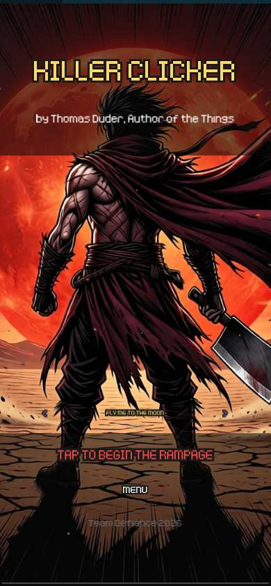
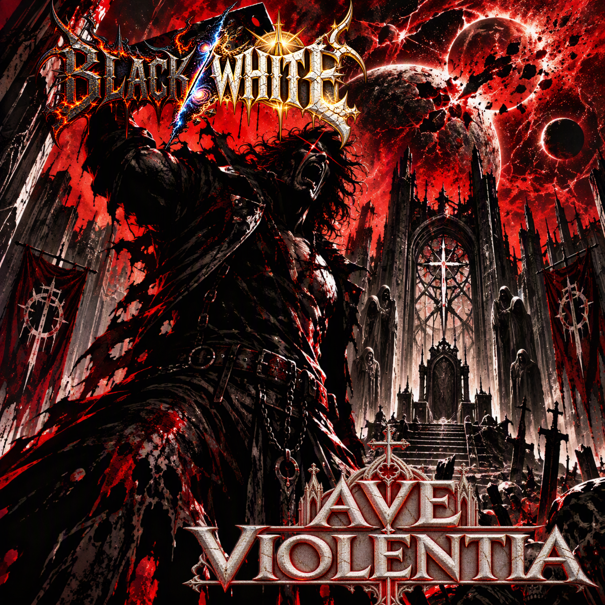

A fast, brutal idle-clicker of blood, gore and monsters.

From Thomas Duder, Author of the Things: a standalone game sequel to Killer 13, packed with secrets for readers and new players alike.
Battle through ten zones, challenge towering bosses, and reshape your build with perks and Blutrausch Energie skills.
Killer Clicker and its companion album Ave Violentia were developed through an AI-assisted creative process led by Thomas Duder. The work included creative direction, guiding the AI toward the intended vision, repeated iteration, testing, and troubleshooting. The figures below cover both projects, not the game alone.
575 pages in A Chat With Max 1 and 433 in A Chat With Max 2, including repeated or redundant material. These are conversation pages, not pages of hand-written code.
Estimated hands-on time across creative direction, iteration, testing, and troubleshooting for the game and album combined.
The starting point for this combined creative effort.
Ave Violentia was distributed and released.
The public Killer Clicker playtest began.
A comprehensive playthrough estimate, excluding Marathon Mode. Actual times will vary.
Development figures are approximate and reflect the reported snapshot; they may change as work continues.
Discover the companion album by BLACK/WHITE.
Explore the album →